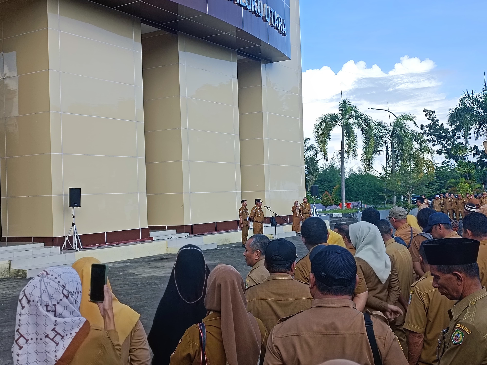

Apel Gabungan Perdana Penjabat Gubernur Maluku Utara
3 Juni 2024
Halaman Kantor Gubernur Maluku Utara
(Foto: Aarrie Tarigan)
Dalam sebuah momentum yang penuh semangat dan antusiasme, apel gabungan perdana di lingkup Pemerintah Provinsi Maluku Utara digelar dengan kehadiran Penjabat Gubernur Drs. Samsuddin Abdul Kadir. Kegiatan ini berlangsung dengan khidmat dan menjadi momen penting dalam penegakan disiplin dan peningkatan kinerja di seluruh jajaran pemerintahan provinsi.
Dalam amanatnya, Drs. Samsuddin Abdul Kadir menegaskan bahwa kedisiplinan kehadiran di kantor merupakan fondasi utama dalam membangun budaya kerja yang produktif dan efektif. "Kedisiplinan adalah cerminan dari komitmen kita terhadap tugas dan tanggung jawab. Kehadiran tepat waktu bukan hanya sebuah kewajiban, tetapi juga bentuk penghargaan terhadap waktu dan usaha bersama," ujar beliau dengan tegas.
Penjabat Gubernur juga memberikan penekanan khusus kepada para atasan langsung di berbagai satuan kerja untuk selalu bersikap tegas dan konsisten dalam menegakkan disiplin. "Tugas kita sebagai pemimpin adalah memastikan bahwa seluruh anggota tim bekerja sesuai dengan aturan yang telah ditetapkan. Ketegasan kita akan menjadi contoh dan motivasi bagi bawahan untuk selalu berperilaku disiplin," lanjutnya.
Dalam kesempatan tersebut, Drs. Samsuddin Abdul Kadir juga menyoroti pentingnya pemanfaatan kendaraan dinas. Beliau menggarisbawahi bahwa kendaraan dinas harus difungsikan secara optimal untuk mendukung aktivitas berkantor dan mobilitas kerja. "Kendaraan dinas adalah aset yang harus digunakan sebaik-baiknya untuk menunjang produktivitas. Penggunaan yang efisien dan efektif dari fasilitas ini akan berdampak langsung pada peningkatan kinerja pemerintahan," jelasnya.
Apel gabungan ini juga menjadi ajang bagi Penjabat Gubernur untuk menyampaikan harapan-harapannya terhadap seluruh ASN di lingkungan Pemprov Maluku Utara. Beliau berharap agar semangat baru yang tercipta dari kegiatan ini dapat terus terjaga dan menjadi motivasi bagi semua pegawai untuk bekerja lebih baik dan memberikan pelayanan maksimal kepada masyarakat.
Tidak hanya itu, Drs. Samsuddin Abdul Kadir juga mengajak seluruh jajaran pemerintah untuk saling bekerja sama dan berkolaborasi dalam mencapai tujuan bersama. "Kita harus bergerak dalam satu irama, dengan semangat kebersamaan dan gotong royong. Hanya dengan demikian, kita bisa mencapai target-target pembangunan dan memberikan yang terbaik bagi masyarakat Maluku Utara," tuturnya menutup amanat.
Apel gabungan perdana ini diharapkan menjadi titik awal dari perubahan positif di lingkungan Pemerintah Provinsi Maluku Utara, dengan kedisiplinan dan produktivitas sebagai kunci utama dalam menjalankan roda pemerintahan yang efektif dan efisien.
Editor : Aarrie Tarigan